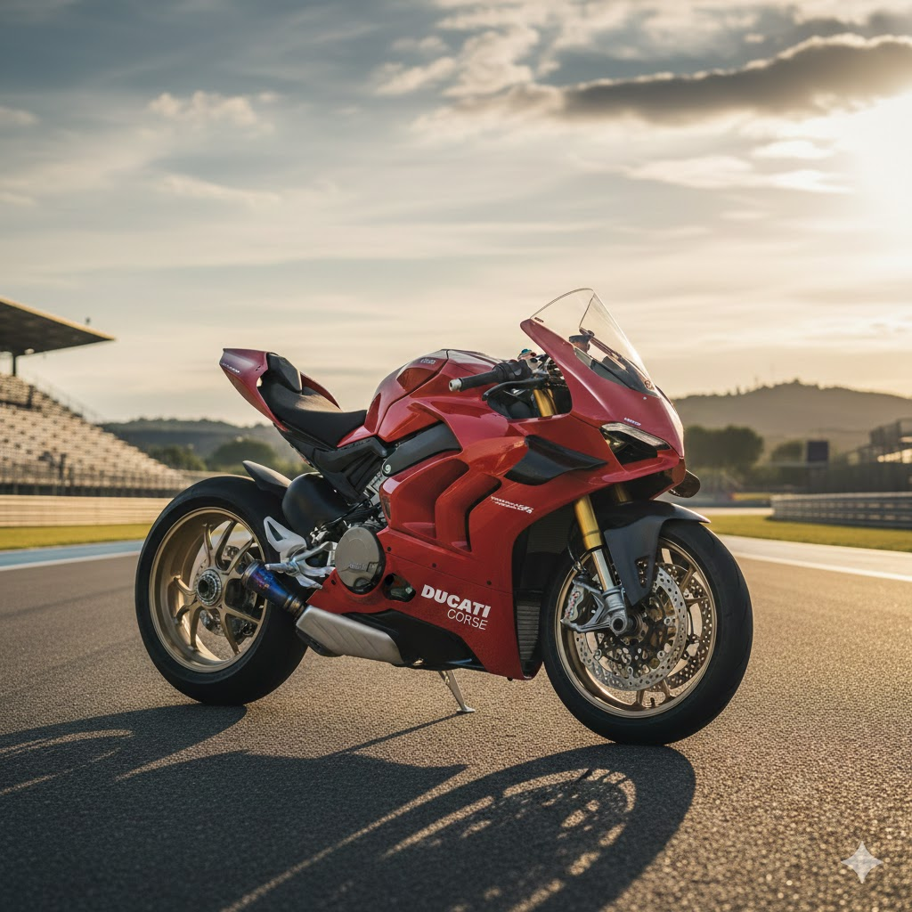
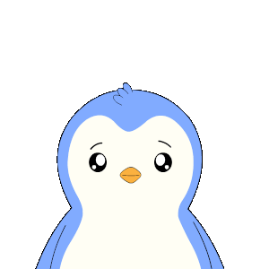
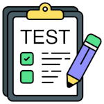

Ducati Panigale V4R
La Ducati Panigale es una de las motocicletas más emblemáticas y avanzadas de la marca italiana Ducati, reconocida mundialmente por su rendimiento en pista y su diseño de vanguardia. Inspirada en el espíritu de las motos de competición del MotoGP, la Panigale combina ingeniería de precisión, potencia extrema y una estética inconfundible.

Tu resultado:
0/0


Libro de visitas